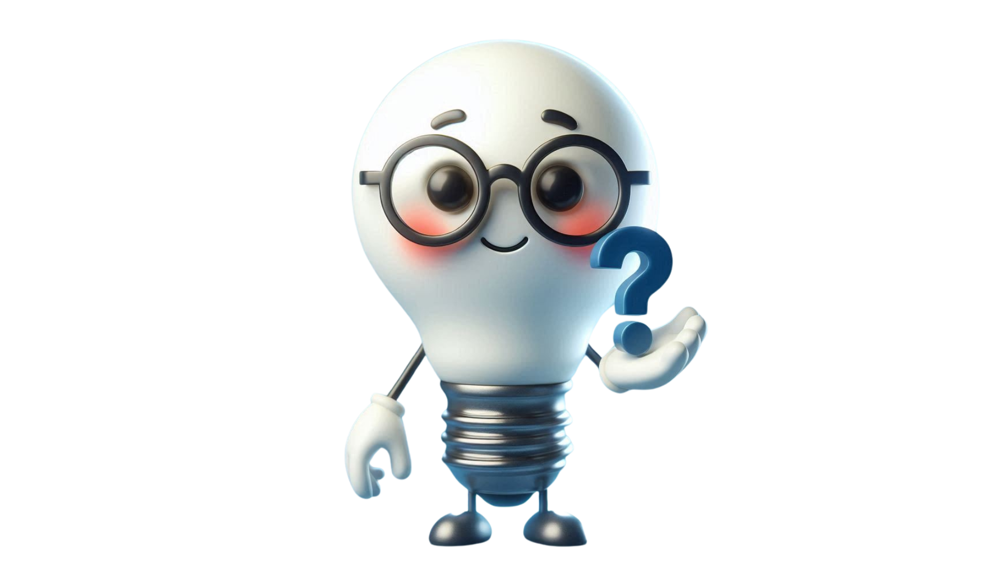
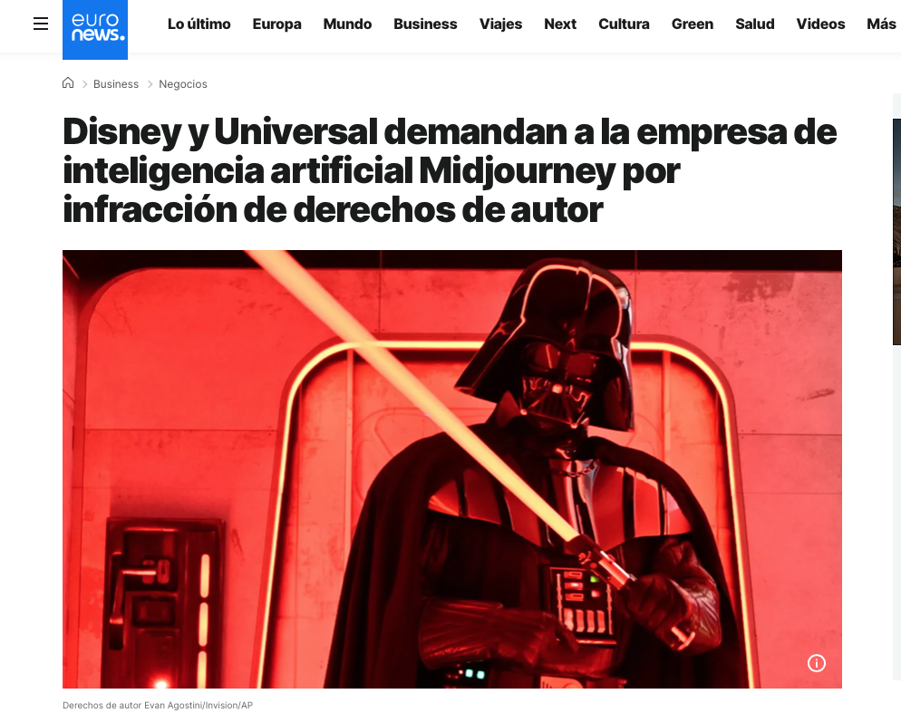

La relación entre la inteligencia artificial y los derechos de autor es un área compleja y en constante evolución, generando debates significativos sobre la autoría y la propiedad intelectual de las obras creadas con la ayuda de sistemas de IA. La legislación de derechos de autor tradicionalmente se ha centrado en la protección de las creaciones originales de autores humanos, otorgándoles derechos exclusivos sobre sus obras. Sin embargo, la capacidad de las IA para generar textos, imágenes, música y otros contenidos plantea interrogantes fundamentales sobre si una máquina puede ser considerada un "autor" en el sentido legal.
La relación entre la inteligencia artificial y los derechos de autor es un área compleja y en constante evolución, generando debates significativos sobre la autoría y la propiedad intelectual de las obras creadas con la ayuda de sistemas de IA. La legislación de derechos de autor tradicionalmente se ha centrado en la protección de las creaciones originales de autores humanos, otorgándoles derechos exclusivos sobre sus obras. Sin embargo, la capacidad de las IA para generar textos, imágenes, música y otros contenidos plantea interrogantes fundamentales sobre si una máquina puede ser considerada un "autor" en el sentido legal.
En la actualidad, la postura predominante en muchas jurisdicciones es que la IA en sí misma no puede ser considerada autora a los efectos de la ley de derechos de autor. Esto se debe a que la autoría generalmente se vincula a la creatividad y la intención de un ser humano. Aunque una IA pueda producir obras sofisticadas, se considera que estas son el resultado de los algoritmos programados y los datos con los que fue entrenada, más que de una expresión original de un intelecto humano con intencionalidad creativa propia.
Por lo tanto, la cuestión de quién posee los derechos de autor de una obra generada con IA suele depender del grado de intervención humana en el proceso creativo. Si un ser humano utiliza una IA como una herramienta para facilitar su propia expresión creativa, guiando el proceso, realizando aportaciones significativas y tomando decisiones creativas sustanciales, es probable que los derechos de autor recaigan en ese ser humano. En este escenario, la IA se considera similar a un pincel o un software de edición, una herramienta que asiste al autor humano.
Sin embargo, la situación se vuelve más ambigua cuando la intervención humana es mínima y la IA genera la obra de forma relativamente autónoma a partir de un simple prompt o instrucción. En estos casos, donde la contribución creativa humana es limitada, la atribución de derechos de autor es incierta. Algunas jurisdicciones podrían considerar que no existe un autor humano identificable y, por lo tanto, la obra no estaría protegida por derechos de autor. Otras podrían buscar atribuir la autoría al programador de la IA o a quien proporcionó los datos de entrenamiento, aunque esta perspectiva también presenta desafíos legales y conceptuales.
En conclusión, la interacción entre la inteligencia artificial y los derechos de autor desafía las nociones tradicionales de autoría. Si bien la postura actual tiende a negar la autoría a la IA en sí misma, la creciente sofisticación de estos sistemas y su capacidad para generar obras complejas exige una reconsideración de los marcos legales existentes. Es probable que en el futuro se produzcan adaptaciones legislativas y jurisprudenciales para abordar de manera más clara la titularidad de los derechos de autor en las creaciones generadas con la ayuda de la inteligencia artificial, buscando un equilibrio entre la protección de la creatividad humana y el fomento de la innovación tecnológica.
Para reflexionar...


El papel que juegan los derechos de autor en el contexto de la IA es un tema realmente polémico. Por ejemplo, esta noticia puede dar pie a un debate en clase con nuestro alumnado.Además, te invito a que pruebes este detector de plagio (aunque ya te aviso: no siempre es fiable).